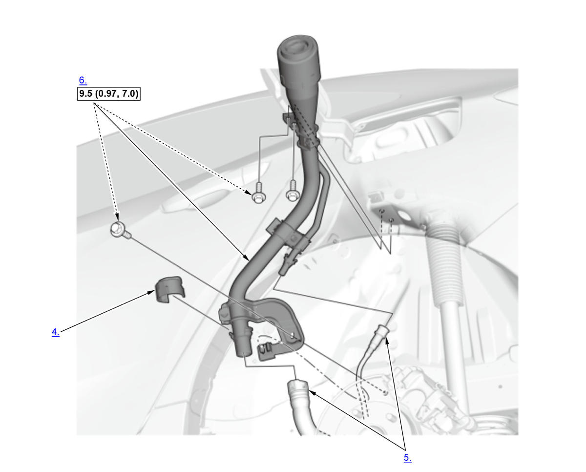

Removal and Installation: Procedure
NOTE:
Numbered call-outs in figure pertain to list numbers in following procedure.

 Courtesy of HONDA, U.S.A., INC.
Courtesy of HONDA, U.S.A., INC. |
Torque: N.m (kgf.m, lbf.ft) |
- Fuel Tank - Drain
- Fuel Fill Door Adapter - Remove
- Left Rear Inner Fender - Remove
- Filler Connector Cover - Remove
- Quick-Connect Fitting - Disconnect
- Fuel Fill Pipe - Remove
- All Removed Parts - Install
1. Install the parts in the reverse order of removal.